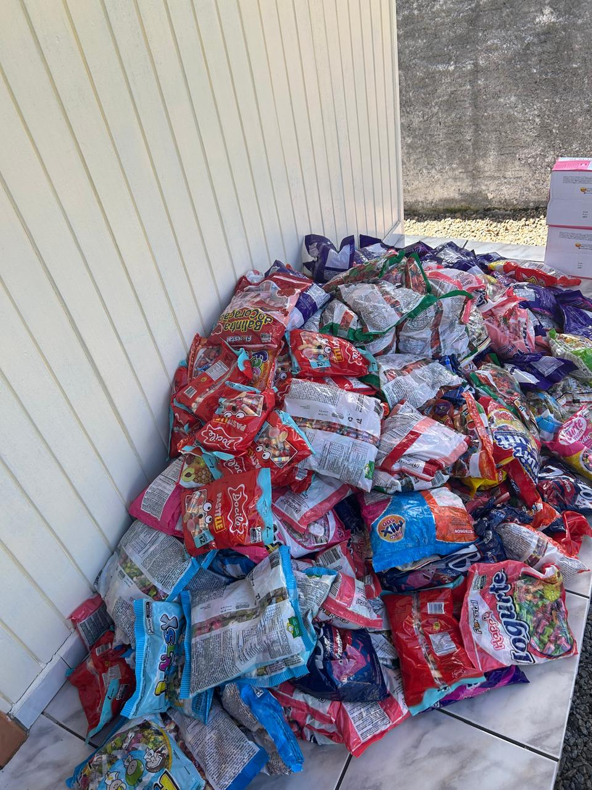
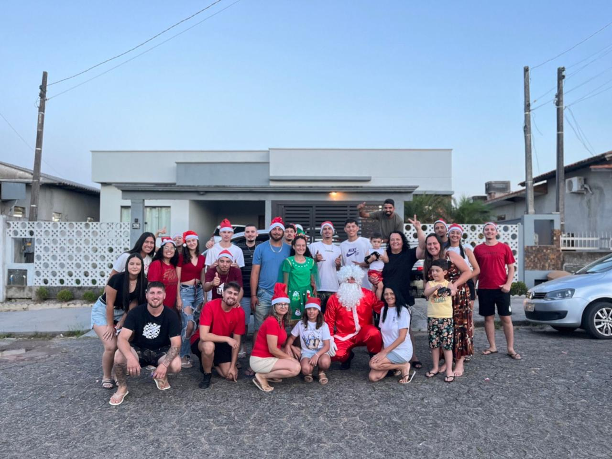
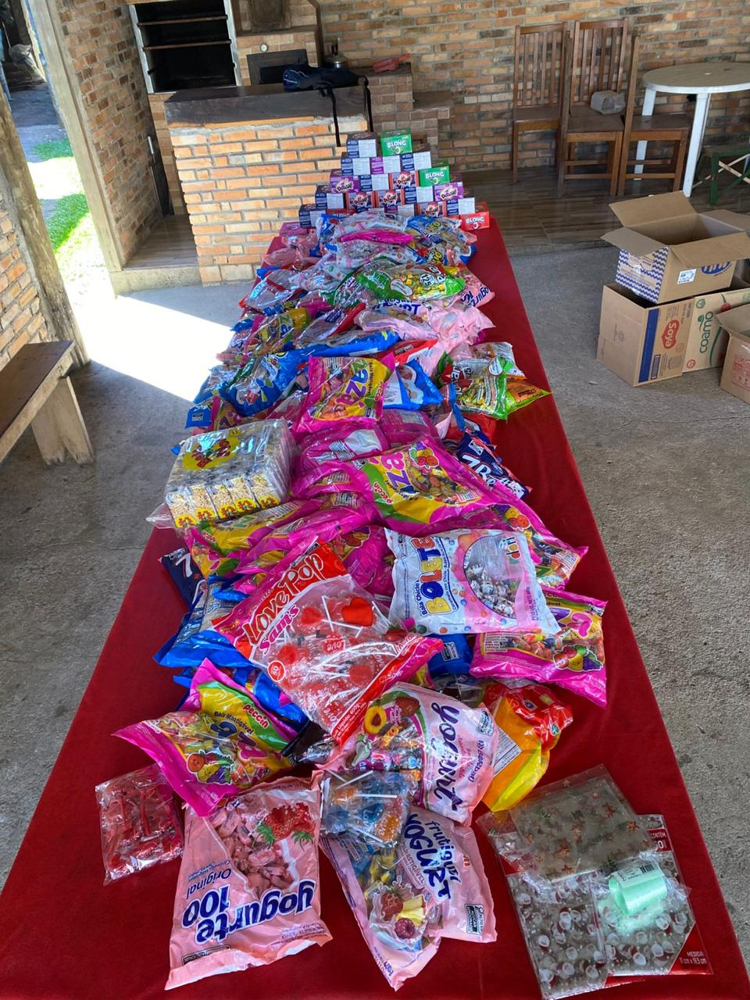

2024Onde tudo ganhou forçaPrimeira edição
O que começou com um grupo de amigos virou uma corrente do bem. Em 2026, vamos às ruas de Içara mais uma vez espalhar alegria, carinho e muitos doces para as crianças.


Olha só alguns momentos da nossa ação! Cada entrega, cada encontro e cada sorriso mostram por que essa corrente de solidariedade merece continuar.
O vídeo não carregou. Verifique se assets/video-natal.mp4 foi enviado junto com o site.
Em 2024 e 2025, a solidariedade ganhou forma em cada pacote de doce doado. Veja um pouquinho do que construímos juntos — e imagine o que ainda podemos fazer.

2024Toda contribuição conta. Escolha como você gostaria de ajudar a tornar o Natal de uma criança ainda mais especial.
Balas, pirulitos, chocolates e pacotes de guloseimas. Cada doação ajuda a encher mais saquinhos de alegria.
Ver pontos de coletaDoe qualquer valor. As contribuições em dinheiro ajudam nossa equipe a comprar mais doces para distribuir.
Copiar chave PIXComércios e empresas também podem fazer a diferença e ter sua marca reconhecida nesta iniciativa.
Conhecer a parceriaNão importa o valor: sua contribuição se transforma em doces e carinho para as crianças. Copie a chave abaixo e doe pelo aplicativo do seu banco.
Prefere entregar pessoalmente? Estes são nossos pontos de coleta. Separe os doces e ajude a espalhar essa corrente de carinho.
Entregue suas doações neste ponto parceiro.
Entregue suas doações neste ponto parceiro.
Entregue suas doações neste ponto parceiro.
Atenção: os links abrem uma busca no mapa, não um endereço confirmado. Consulte o local e o horário de funcionamento antes de entregar.
Temos uma data para arrecadar e outra para espalhar a magia pelas ruas.
No dia 18 de dezembro, nossos voluntários vão se reunir com carros, músicas natalinas e a presença especial do Papai Noel para levar doces e alegria às crianças pelas ruas de Içara.
Amigos e voluntários reunidos
Carros e músicas de Natal
Papai Noel distribuindo doces
Trajeto e horários específicos serão informados pela organização.
Cada empresa parceira ajuda a transformar a solidariedade em momentos especiais. Este espaço é reservado a quem apoia nosso Natal.
Seja um patrocinador de 2026 e ajude nossa ação a alcançar mais crianças.
Separamos algumas informações importantes para quem deseja participar.
Aceitamos pacotes de balas, pirulitos, chocolates e outras guloseimas fechadas, dentro do prazo de validade e em boas condições.
O prazo de arrecadação é 14 de dezembro de 2026. A carreata será no dia 18 de dezembro.
Sim. Toda quantia ajuda a comprar mais doces e a ampliar o alcance da ação. Confira o nome do destinatário no app do seu banco antes de concluir.
Empresas podem colaborar com doces, recursos financeiros ou apoio à ação. Clique em “Quero ser patrocinador” para preparar uma mensagem de contato com a equipe.
A carreata está prevista para as ruas de Içara/SC, em 18/12/2026. O percurso e os horários ainda não foram informados.
Doe. Compartilhe. Convide. Vamos fazer de 2026 o nosso Natal mais especial.